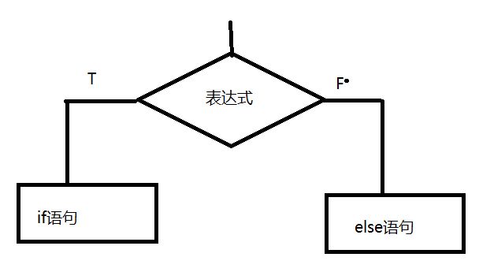

梳理知识点
1、js中的字面量有哪些 数值 字符
2、什么是变量？定义方式？---显式 隐式
3、 var num = 90 typeof 结果： 六种
4、变量的数据类型 null 和 undefined有什么区别？
5、运算符和表达式？ 10+“10” = ++i i++ == === && || ！ ？ ：
在不需要第三个变量时，完成两个数的交换？
var a = 9 , b = 3;
a = a + b; 12
b = a - b; 9
a = a - b; 3
1、短路问题
当 true 遇到 || ， || 后面的表达式不执行
当 false 遇到 && ， && 后面的表达式不执行
2、运算符的优先级
() > 单目运算符！ ++ -- > 算术 > 关系 > 逻辑 > 条件 > 赋值
3、类型转换
自动类型转换
1、在进行算术运算或关系运算时，纯数字字符串会自动转换成数值 "123" -- > 123
2、在进行算术运算或关系运算时，true 会自动转换成 1 ， false会自动转换成 0
3、在进行算术运算或关系运算时， null 会自动转换成0 ， undefined会自动转换成NaN
强制类型转换
parseInt() 尝试将 字符串类型的数据转成 数值类型（整数） 不能正常转换的结果都是 NaN
parseFloat() 尝试将 字符串类型的数据转成 数值类型（小数） 不能正常转换的结果都是 NaN
Number() 将纯数字字符串转成数值类型 不能正常转换的结果 是 NaN
toString() 将某个类型转成 string
toString(参数) 参数可以是 2 8 16 将一个十进制整数转成 2 或 8 或 16进制
isNaN() 判断非数字 如果括号中是非数字，结果是true ， 如果是数字（纯数字字符串） ，结果就是false
eval( " " ) 将一个字符串转换表达式 并返回表达式的值
4、程序的三大结构
顺序结构 ： 程序从上到下逐条语句执行 不会跳过任何一行代码
选择结构 ： 根据某个条件 执行某段代码
循环结构 ： 反复执行的代码
5、选择结构 （出口只有一个）
单分支选择结构 （一个条件）
控制语句：
if(表达式){
语句1;
}else{
语句2;
}
说明： 表达式一般为 条件表达式
执行逻辑：如果表达式结果为真 ，就执行if语句 否则执行else

if语句嵌套 ：
if(){
if(){
}else{
}
}else{
if(){
}
}
思考完成下面练习：
输入一个整数，判断一个整数否是奇数，并输出判断结果 (if)
- 用户输入自己的考试成绩，提示用户是否及格。如果及格了，弹出警告框“恭喜，你及格了”、“不要骄傲啊”。如果没有及格，那么弹出警告框“很遗憾，你没有及格”、“请继续努力啊”。 然后都弹出“么么哒”。(if)
- 一个加油站为了鼓励车主多加油，所以加的多有优惠。（嵌套）92 号汽油，每升 6 元；如果大于等于 20升，那么每升 5.9 ；97 号汽油，每升 7 元；如果大于等于 30升，那么每升 6.95编写 JS 程序，用户输入自己的汽油编号，然后输入自己加多少升，弹出价格。
- //alert( isNaN( num ) ? "非数字" : ( num > 0 ? "正数" : ( num< 0 ? "负数" : "非正非负" ) ) );// 改写成 if
5、输入一个高考成绩 如果成绩大于700 输出 可以上清华了，否则输出 ： 来千锋吧
if语句（布尔环境）条件说明 ：
1、非0为真，0为假 i%2
2、所有字符串为真 ， 空字符串为假
3、所有对象为真
4、所有函数为真
5、undefined 和 null 都为假
if else几点说明：
1、else 后面不能有条件
2、else 可以省略
3、如果if有嵌套，else 永远与离他最近的同级的if语句配对
4、如果if 或 else 后面有一条语句， 花括号可以省略 （多条语句不能省略）
多分支选择结构 （多个条件）
if( 表达式1 ){
语句1
}else if( 表达式2 ){
语句2
}else if(表达式3){
语句3
}else{
语句n
}
执行逻辑：

6、多分支语句 switch （开关语句）
语法结构：
switch( 表达式 ){
case 常量表达式1 : 语句1 ;
case 常量表达式2 : 语句2 ;
case 常量表达式3 : 语句3 ;
default : 语句n;
}
switch 语句的表达式 ： 一般是一个变量 ， 表达式必须有具体的值
说明：
default 可以省略
case 后面的常量表达式尽量不要重复
default位置任意（建议放到最后）
如果 case 后面语句没有break ， 会实现case 穿透 ，继续向下执行
7、if多分和switch多分支的使用场景
当条件是一个范围时 一般用if else if
当条件有具体值 ， 一般用switch